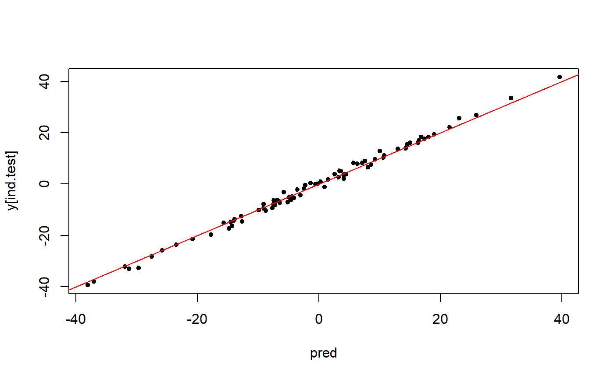

Sparse linear regression
big_spLinReg.RdFit lasso penalized linear regression path for a Filebacked Big Matrix. Covariates can be added to correct for confounders.
big_spLinReg( X, y.train, ind.train = rows_along(X), ind.col = cols_along(X), covar.train = NULL, base.train = NULL, pf.X = NULL, pf.covar = NULL, alphas = 1, K = 10, ind.sets = NULL, nlambda = 200, nlam.min = 50, n.abort = 10, dfmax = 50000, ncores = 1, ... )
Arguments
| X | A FBM. |
|---|---|
| y.train | Vector of responses, corresponding to |
| ind.train | An optional vector of the row indices that are used, for the training part. If not specified, all rows are used. Don't use negative indices. |
| ind.col | An optional vector of the column indices that are used. If not specified, all columns are used. Don't use negative indices. |
| covar.train | Matrix of covariables to be added in each model to correct
for confounders (e.g. the scores of PCA), corresponding to |
| base.train | Vector of base predictions. Model will be learned starting from these predictions. This can be useful if you want to previously fit a model with large-effect variables that you don't want to penalize. |
| pf.X | A multiplicative factor for the penalty applied to each coefficient.
If supplied, |
| pf.covar | Same as |
| alphas | The elastic-net mixing parameter that controls the relative
contribution from the lasso (l1) and the ridge (l2) penalty. The penalty is
defined as $$ \alpha||\beta||_1 + (1-\alpha)/2||\beta||_2^2.$$
|
| K | Number of sets used in the Cross-Model Selection and Averaging
(CMSA) procedure. Default is |
| ind.sets | Integer vectors of values between |
| nlambda | The number of lambda values. Default is |
| nlam.min | Minimum number of lambda values to investigate. Default is |
| n.abort | Number of lambda values for which prediction on the validation
set must decrease before stopping. Default is |
| dfmax | Upper bound for the number of nonzero coefficients. Default is
|
| ncores | Number of cores used. Default doesn't use parallelism. You may use nb_cores. |
| ... | Arguments passed on to
|
Value
Return an object of class big_sp_list (a list of length(alphas)
x K) that has 3 methods predict, summary and plot.
Details
This is a modified version of one function of
package biglasso.
It adds the possibility to train models with covariables and use many
types of FBM (not only double ones).
Yet, it only corresponds to screen = "SSR" (Sequential Strong Rules).
Also, to remove the choice of the lambda parameter, we introduce the Cross-Model Selection and Averaging (CMSA) procedure:
This function separates the training set in
Kfolds (e.g. 10).In turn,
each fold is considered as an inner validation set and the others (K - 1) folds form an inner training set,
the model is trained on the inner training set and the corresponding predictions (scores) for the inner validation set are computed,
the vector of scores which maximizes log-likelihood is determined,
the vector of coefficients corresponding to the previous vector of scores is chosen.
The
Kresulting vectors of coefficients are then averaged into one final vector of coefficients.
References
Tibshirani, R., Bien, J., Friedman, J., Hastie, T., Simon, N., Taylor, J. and Tibshirani, R. J. (2012), Strong rules for discarding predictors in lasso-type problems. Journal of the Royal Statistical Society: Series B (Statistical Methodology), 74: 245-266. https://doi.org/10.1111/j.1467-9868.2011.01004.x.
Zeng, Y., and Breheny, P. (2017). The biglasso Package: A Memory- and Computation-Efficient Solver for Lasso Model Fitting with Big Data in R. arXiv preprint arXiv:1701.05936. https://arxiv.org/abs/1701.05936.
Privé, F., Aschard, H., and Blum, M. G.B. (2019). Efficient implementation of penalized regression for genetic risk prediction. Genetics, 212: 65-74. https://doi.org/10.1534/genetics.119.302019.
See also
Examples
set.seed(1) # simulating some data N <- 230 M <- 730 X <- FBM(N, M, init = rnorm(N * M, sd = 5)) y <- rowSums(X[, 1:10]) + rnorm(N) covar <- matrix(rnorm(N * 3), N) ind.train <- sort(sample(nrow(X), 150)) ind.test <- setdiff(rows_along(X), ind.train) # fitting model for multiple lambdas and alphas test <- big_spLinReg(X, y[ind.train], ind.train = ind.train, covar.train = covar[ind.train, ], alphas = c(1, 0.5, 0.1, 0.01)) # peek at the models plot(test)summary(test)#> # A tibble: 4 x 6 #> alpha validation_loss intercept beta nb_var message #> <dbl> <dbl> <dbl> <list> <int> <list> #> 1 0.01 198. -1.17 <dbl [733]> 733 <chr [10]> #> 2 0.1 177. -1.22 <dbl [733]> 732 <chr [10]> #> 3 0.5 114. -0.756 <dbl [733]> 502 <chr [10]> #> 4 1 1.33 -0.0712 <dbl [733]> 208 <chr [10]>#> # A tibble: 1 x 6 #> alpha validation_loss intercept beta nb_var message #> <dbl> <dbl> <dbl> <list> <int> <list> #> 1 1 1.33 -0.0712 <dbl [733]> 208 <chr [10]>pred <- predict(test, X, ind.row = ind.test, covar.row = covar[ind.test, ]) plot(pred, y[ind.test], pch = 20); abline(0, 1, col = "red")